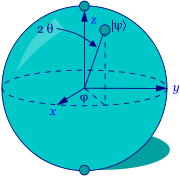

Quantum Computing
Combining physics, mathematics and computer science, quantum computing and its sister discipline of quantum information have developed in the past few decades from visionary ideas to two of the most fascinating areas of quantum theory. General interest and excitement in quantum computing was initially triggered by Peter Shor (1994) who showed how a quantum algorithm could exponentially “speed-up” classical computation and factor large numbers into primes far more efficiently than any (known) classical algorithm. Shor’s algorithm was soon followed by several other algorithms that aimed to solve combinatorial and algebraic problems, and in the years since theoretical study of quantum systems serving as computational devices has achieved tremendous progress. Common belief has it that the implementation of Shor’s algorithm on a large scale quantum computer would have devastating consequences for current cryptography protocols which rely on the premise that all known classical worst-case algorithms for factoring take time exponential in the length of their input (see, e.g., Preskill 2005). Consequently, experimentalists around the world are engaged in attempts to tackle the technological difficulties that prevent the realisation of a large scale quantum computer. But regardless whether these technological problems can be overcome (Unruh 1995; Ekert and Jozsa 1996; Haroche and Raimond 1996), it is noteworthy that no proof exists yet for the general superiority of quantum computers over their classical counterparts.
The philosophical interest in quantum computing is manifold. From a social-historical perspective, quantum computing is a domain where experimentalists find themselves ahead of their fellow theorists. Indeed, quantum mysteries such as entanglement and nonlocality were historically considered a philosophical quibble, until physicists discovered that these mysteries might be harnessed to devise new efficient algorithms. But while the technology for harnessing the power of 50–100 qubits (the basic unit of information in the quantum computer) is now within reach (Preskill 2018), only a handful of quantum algorithms exist, and the question of whether these can truly outperform any conceivable classical alternative is still open. From a more philosophical perspective, advances in quantum computing may yield foundational benefits. For example, it may turn out that the technological capabilities that allow us to isolate quantum systems by shielding them from the effects of decoherence for a period of time long enough to manipulate them will also allow us to make progress in some fundamental problems in the foundations of quantum theory itself. Indeed, the development and the implementation of efficient quantum algorithms may help us understand better the border between classical and quantum physics (Cuffaro 2017, 2018a; cf. Pitowsky 1994, 100), and perhaps even illuminate fundamental concepts such as measurement and causality. Finally, the idea that abstract mathematical concepts such as computability and complexity may not only be translated into physics, but also re-written by physics bears directly on the autonomous character of computer science and the status of its theoretical entities—the so-called “computational kinds”. As such it is also relevant to the long-standing philosophical debate on the relationship between mathematics and the physical world.
- 1. A Brief History of the Field
- 2. Basics
- 3 Quantum Algorithms
- 4 Realisations
- 5. Philosophical Questions
- Bibliography
- Academic Tools
- Other Internet Resources
- Related Entries
1. A Brief History of the Field
1.1 Physical Computational Complexity
The mathematical model for a “universal” computer was defined long before the invention of computers and is called the Turing machine (Turing 1936). A Turing machine consists of an unbounded tape, a head capable of reading from and writing to it which can occupy one of a potentially infinite number of possible states, and an instruction table (i.e. a transition function). This table, given the head’s initial state and the input it reads from the tape in that state, determines (a) the symbol that the head will write on the tape, (b) the internal state it will occupy, and (c) the displacement of the head on the tape. In 1936 Turing showed that since one can encode the instruction table of a Turing machine \(T\) and express it as a binary number \(\#(T)\), there exists a universal Turing machine \(U\) that can simulate the instruction table of any Turing machine on any given input. That the Turing machine model captures the concept of computability in its entirety is the essence of the Church-Turing thesis, according to which any effectively calculable function can be computed using a Turing machine. Admittedly, no counterexample to this thesis (which is the result of convergent ideas of Turing, Post, Kleene and Church) has yet been found. But since it identifies the class of computable functions with the class of those functions which are computable using a Turing machine, this thesis involves both a precise mathematical notion and an informal and intuitive notion, hence cannot be proved or disproved. Simple cardinality considerations show, however, that not all functions are Turing-computable (the set of all Turing machines is countable, while the set of all functions from the natural numbers to the natural numbers is not), and the discovery of this fact came as a complete surprise in the 1930s (Davis 1958).
Computability, or the question whether a function can be computed, is not the only question that interests computer scientists. Beginning especially in the 1960s (Cobham 1965; Edmonds 1965; Hartmanis and Stearns 1965), the question of the cost of computing a function (which was to some extent already anticipated in 1956 by Gödel) also came to be of great importance. This cost, also known as computational complexity, is measured naturally in the physical resources (e.g., time, space, energy) invested in order to solve the computational problem at hand. Computer scientists classify computational problems according to the way their cost function behaves as a function of their input size, \(n\) (the number of bits required to store the input) and in particular, whether it increases exponentially or polynomially with \(n\). Tractable problems are those which can be solved in polynomial cost, while intractable problems are those which can only be solved with exponential cost (the former solutions are commonly regarded as efficient although an exponential-time algorithm could turn out to be more efficient than a polynomial-time algorithm for some range of input sizes).
So far, the Turing machines we have been discussing have been deterministic; for such machines, their behaviour at any given time is wholly determined by their state plus whatever their input happens to be. In other words such machines have a unique “instruction table” (i.e. transition function). We can generalise the Turing model, however, by allowing a machine to instantiate more than one transition function simultaneously. A nondeterministic Turing machine (NTM), upon being presented with a given input in a given state, is allowed to ‘choose’ which of its transition functions to follow, and we say that it solves a given problem whenever, given some input, there exists at least one path through its state space leading to a solution. Exactly how an NTM “chooses” whether to follow one transition function rather than another is left undefined (in his 1936 paper, Turing originally conceived these choices as those of an external operator). In particular, we do not assume that any probabilities are attached to these choices. In a probabilistic Turing machine (PTM), on the other hand, we characterise the computer’s choices by associating a particular probability with each of its possible transitions.
Probabilistic and deterministic Turing machines (DTMs) have different success criteria. A successful deterministic algorithm for a given problem is guaranteed to yield the correct answer given its input. Of a successful probabilistic algorithm, on the other hand, we only demand that it yield a correct answer with “high” probability (minimally, we demand that it be strictly greater than 1/2). It was believed, until relatively recently, that for some problems (see, e.g. Rabin 1976) probabilistic algorithms are dramatically more efficient than any deterministic alternatives; in other words that the set or “class” of problems efficiently solvable by PTM is larger than the class of problems efficiently solvable by DTM. Fascinatingly, evidence has been mounting in recent years (e.g. Agrawal, Kayal, and Saxena 2004) that this is not the case, and it is now believed that the PTM model in fact does not offer a computational advantage in this sense over the DTM model (Arora and Barak 2009 Ch. 20). Probabilistic (Turing) computation is nevertheless interesting to consider, because abstractly a quantum computer is just a variation on the PTM which does appear to offer computational advantages over deterministic computation, although as already mentioned this conjecture still awaits a proof. See Hagar (2007) and Cuffaro (2018b) for divergent opinions over what this purported quantum computational advantage tells us about the theory of computational complexity as a whole.
The class \(\mathbf{P}\) (for Polynomial) is the class containing all the computational decision problems that can be solved by a DTM in polynomial time. The class NP (for Non-deterministic Polynomial) is the class containing all the computational decision problems that can be solved by an NTM in polynomial time.[1] The most famous problems in NP are called “NP-complete”, where “complete” designates the fact that these problems stand or fall together: Either they are all tractable, or none of them is! If we knew how to solve an NP-complete problem efficiently (i.e., with polynomial cost) we could use it to efficiently solve any other problem in NP (Cook 1971). Today we know of hundreds of examples of NP-complete problems (Garey and Johnson 1979), all of which are reducible one to another with polynomial slowdown, and since the best known algorithm for any of these problems is exponential, the widely believed conjecture is that there is no polynomial algorithm that can solve them. Clearly \(\mathbf{P} \subseteq \mathbf{NP}\). Proving or disproving the conjecture that \(\mathbf{P} \ne \mathbf{NP}\), however, remains perhaps one of the most important open questions in computer science and complexity theory.
Although the original Church-Turing thesis involves the abstract mathematical notion of computability, physicists as well as computer scientists often interpret it as saying something about the scope and limitations of physical computing machines. Wolfram (1985) claims that any physical system can be simulated (to any degree of approximation) by a universal Turing machine, and that complexity bounds on Turing machine simulations have physical significance. For example, if the computation of the minimum energy of some system of \(n\) particles requires at least an exponentially increasing number of steps in \(n\), then the actual relaxation of this system to its minimum energy state will also take exponential time. Aharonov (1999) strengthens this thesis (in the context of showing its putative incompatibility with quantum mechanics) when she says that a PTM can simulate any reasonable physical device at polynomial cost. In order for the physical Church-Turing thesis to make sense we have to relate physical space and time parameters to their computational counterparts: memory capacity and number of computation steps, respectively. There are various ways to do that, leading to different formulations of the thesis (Pitowsky 1990). For example, one can encode the set of instructions of a universal Turing machine and the state of its infinite tape in the binary development of the position coordinates of a single particle. Consequently, one can physically ‘realise’ a universal Turing machine as a billiard ball with hyperbolic mirrors (Moore 1990; Pitowsky 1996). For the most intuitive connection between abstract Turing machines and physical devices see the pioneering work of Gandy (1980), simplified later by Sieg and Byrnes (1999), and discussed, for example, in Copeland (2018). It should be stressed that there is no relation between the original Church-Turing thesis and its physical version (Pitowsky and Shagrir 2003), and while the former concerns the concept of computation that is relevant to logic (since it is strongly tied to the notion of proof which requires validation), it does not analytically entail that all computations should be subject to validation. Indeed, there is a long historical tradition of analog computations which use continuous physical processes (Dewdney 1984), and the output of these computations is validated either by repetitive “runs” or by validating the physical theory that presumably governs the behaviour of the analog computer.
1.2 Physical “Short-cuts” of Computation
Do physical processes exist which contradict the physical Church-Turing thesis? Apart from analog computation, there exist at least two main kinds of example purporting to show that the notion of recursion, or Turing-computability, is not a natural physical property (Pour-el and Richards 1981; Pitowsky 1990; Hogarth 1994). Although the physical systems involved (a specific initial condition for the wave equation in three dimensions and an exotic solution to Einstein’s field equations, respectively) are somewhat contrived, a thriving school of “hypercomputation” that aspires to extend the limited examples of physical “hypercomputers” and in so doing to physically “compute” the non-Turing-computable has nevertheless emerged (for a review see Copeland (2002); for a criticism: Davis (2003); for a recent proposal and response to criticisms see Andréka et al. (2018)). Quantum hypercomputation is rarely discussed in the literature (see, e.g., Adamyan, Calude, and Pavlov 2004), but the most concrete attempt to harness quantum theory to compute the non-computable is the suggestion to use the quantum adiabatic algorithm (see below) to solve Hilbert’s Tenth Problem (Kieu 2002, 2004)—a Turing-undecidable problem equivalent to the halting problem. Criticism, however, has exposed the unphysical character of the alleged quantum adiabatic hypercomputer (see Hodges 2005; Hagar and Korolev 2007).
Setting aside “hypercomputers”, even if we restrict ourselves only to Turing-computable functions, one can still find many proposals in the literature that purport to display “short-cuts” in computational resources. Consider, e.g., the DNA model of computation that was claimed (Adleman 1994; Lipton 1995) to solve NP-complete problems in polynomial time. A closer inspection shows that the cost of the computation in this model is still exponential since the number of molecules in the physical system grows exponentially with the size of the problem. Or take an allegedly instantaneous solution to another NP-complete problem using a construction of rods and balls (Vergis, Steiglitz, and Dickinson 1986) that unfortunately ignores the accumulating time-delays in the rigid rods that result in an exponential overall slowdown. It appears that these and other similar models cannot serve as counter-examples to the physical Church-Turing thesis (as far as complexity is concerned) since they all require some exponential physical resource. Note, however, that all these models are based on classical physics, hence the unavoidable question: Can the shift to quantum physics allow us to find “short-cuts” in computational resources? The quest for the quantum computer began with the possibility of giving a positive answer to this question.
1.3 Milestones
The idea of a computational device based on quantum mechanics was explored already in the 1970s by physicists and computer scientists. As early as 1969 Steven Wiesner suggested quantum information processing as a possible way to better accomplish cryptologic tasks. But the first four published papers on quantum information (Wiesner published his only in 1983), belong to Alexander Holevo (1973), R. P. Poplavskii (1975), Roman Ingarden (1976), and Yuri Manin (1980). Better known are contributions made in the early 1980s by Charles H. Bennett of the IBM Thomas J. Watson Research Center, Paul A. Benioff of Argonne National Laboratory in Illinois, David Deutsch of the University of Oxford, and Richard P. Feynman of the California Institute of Technology. The idea emerged when scientists were investigating the fundamental physical limits of computation. If technology continued to abide by “Moore’s Law” (the observation made in 1965 by Gordon Moore, co-founder of Intel, that the number of transistors per square inch on integrated circuits had doubled every 18 months since the integrated circuit was invented), then the continually shrinking size of circuitry packed onto silicon chips would eventually reach a point where individual elements would be no larger than a few atoms. But since the physical laws that govern the behaviour and properties of the putative circuit at the atomic scale are inherently quantum mechanical in nature, not classical, the natural question arose whether a new kind of computer could be devised based on the principles of quantum physics.
Inspired by Ed Fredkin’s ideas on reversible computation (see Hagar 2016), Feynman was among the first to attempt to provide an answer to this question by producing an abstract model in 1982 that showed how a quantum system could be used to do computations. He also explained how such a machine would be able to act as a simulator for quantum physics, conjecturing that any classical computer could do the same task only inefficiently. In 1985 David Deutsch proposed the first universal quantum Turing machine and paved the way to the quantum circuit model (Deutsch 1989). The young and thriving domain also attracted philosophers’ attention. In 1983 David Albert showed how a quantum mechanical automaton behaves remarkably differently from a classical automaton, and in 1990 Itamar Pitowsky raised the question of whether the superposition principle may allow quantum computers to efficiently solve NP-complete problems. He also stressed that although one could in principle ‘squeeze’ information of exponential complexity into polynomially many quantum states, the real problem lay in the efficient retrieval of this information.
Progress in quantum algorithms began in the 1990s, with the discovery of the Deutsch-Josza algorithm (1992) and of Simon’s algorithm (1994). The latter supplied the basis for Shor’s algorithm for factoring. Published in 1994, this algorithm marked a ‘phase transition’ in the development of quantum computing and sparked a tremendous interest even outside the physics community. In that year the first experimental realisation of the quantum CNOT gate with trapped ions was proposed by Cirac and Zoller (1995). In 1995, Peter Shor and Andrew Steane proposed (independently) the first scheme for quantum error-correction. In that same year the first realisation of a quantum logic gate was done in Boulder, Colorado, following Cirac and Zoller’s proposal. In 1996, Lov Grover from Bell Labs invented a quantum search algorithm which yields a provable (though only quadratic) “speed-up” compared to its classical counterparts. A year later the first model for quantum computation based on nuclear magnetic resonance (NMR) techniques was proposed. This technique was realised in 1998 with a 2-qubit register, and was scaled up to 7 qubits in the Los Alamos National Lab in 2000.
Since 2000 the field has seen tremendous growth. New paradigms of quantum algorithms have appeared, such as adiabatic algorithms, measurement-based algorithms, and topological-quantum-field-theory-based algorithms, as well as new physical models for realising a large scale quantum computer with cold ion traps, quantum optics (using photons and optical cavity), condensed matter systems and solid state physics (meanwhile, the first NMR model had turned out to be a dead-end with respect to scaling; see DiVincenzo (2000)). The basic questions, however, remain open even today: (1) theoretically, can quantum algorithms efficiently solve classically intractable problems? (2) operationally, can we actually realise a large scale quantum computer to run these algorithms?
2. Basics
In this section we review the basic paradigm for quantum algorithms, namely the quantum circuit model, which is composed of the basic quantum units of information (qubits) and the basic logical manipulations thereof (quantum gates). For more detailed introductions see Nielsen and Chuang (2000) and Mermin (2007).
2.1 The Qubit
The qubit is the quantum analogue of the bit, the classical fundamental unit of information. It is a mathematical object with specific properties that can be realised in an actual physical system in many different ways. Just as the classical bit has a state (either 0 or 1), a qubit also has a state. Yet contrary to the classical bit, \(\lvert 0\rangle\) and \(\lvert 1\rangle\) are but two possible states of the qubit, and any linear combination (superposition) thereof is also physically possible. In general, thus, the physical state of a qubit is the superposition \(\lvert\psi \rangle = \alpha \lvert 0\rangle + \beta \lvert 1\rangle\) (where \(\alpha\) and \(\beta\) are complex numbers). The state of a qubit can be described as a vector in a two-dimensional Hilbert space, a complex vector space (see the entry on quantum mechanics). The special states \(\lvert 0\rangle\) and \(\lvert 1\rangle\) are known as the computational basis states, and form an orthonormal basis for this vector space. According to quantum theory, when we try to measure the qubit in this basis in order to determine its state, we get either \(\lvert 0\rangle\) with probability \(\lvert \alpha\rvert^2\) or \(\lvert 1\rangle\) with probability \(\lvert \beta\rvert^2\). Since \(\lvert \alpha\rvert^2 + \lvert\beta\rvert^2 = 1\) (i.e., the qubit is a unit vector in the aforementioned two-dimensional Hilbert space), we may (ignoring the overall phase factor) effectively write its state as \(\lvert \psi \rangle =\) cos\((\theta)\lvert 0\rangle + e^{i\phi}\)sin\((\theta)\lvert 1\rangle\), where the numbers \(\theta\) and \(\phi\) define a point on the unit three-dimensional sphere, as shown here. This sphere is often called the Bloch sphere, and it provides a useful means to visualise the state of a single qubit.
| \(\lvert 0\rangle\) |
|  |
| \(\lvert 1\rangle\) |
The Bloch Sphere
Since \(\alpha\) and \(\beta\) are complex and therefore continuous variables one might think that a single qubit is capable of storing an infinite amount of information. When measured, however, it yields only the classical result (0 or 1) with certain probabilities specified by the quantum state. In other words, the measurement changes the state of the qubit, “collapsing” it from a superposition to one of its terms. In fact one can prove (Holevo 1973) that the amount of information actually retrievable from a single qubit (what Timpson (2013, 47ff.) calls its “accessible information”) is no more than one bit. If the qubit is not measured, however, the amount of “hidden” information it “stores” (what Timpson calls its “specification information”) is conserved under its (unitary) dynamical evolution. This feature of quantum mechanics allows one to manipulate the information stored in unmeasured qubits with quantum gates (i.e. unitary transformations), and is one of the sources for the putative power of quantum computers.
To see why, let us suppose we have two qubits at our disposal. If these were classical bits, then they could be in four possible states (00, 01, 10, 11). Correspondingly, a pair of qubits has four computational basis states (\(\lvert 00\rangle\), \(\lvert 01\rangle\), \(\lvert 10\rangle\), \(\lvert 11\rangle)\). But while a single classical two-bit register can store these numbers only one at a time, a pair of qubits can also exist in a superposition of these four basis states, each with its own complex coefficient (whose mod square, being interpreted as a probability, is normalised). For example, using a “Hadamard gate”—which unitarily transforms a single qubit to the state \(\frac{\lvert 0\rangle + \lvert 1\rangle}{\sqrt 2}\) whenever it is in the state \(\lvert 0\rangle\), and to the state \(\frac{\lvert 0\rangle - \lvert 1\rangle}{\sqrt 2}\) whenever it is in the state \(\lvert 1\rangle\)—we can transform the \(n\)-qubit state \(\lvert 0...01 \rangle\) as follows:
\[\tag{1} | 0^n \rangle| 1 \rangle \xrightarrow{H} \sum_{x \in \{0,1\}^n}\frac{1}{2^{n/2}}~\lvert x \rangle~\lvert - \rangle,\]where \(\lvert - \rangle =_{df} \frac{| 0 \rangle - | 1 \rangle}{\sqrt 2}\). The resulting state is a superposition of \(2^n\) terms and can be imagined to “store” that many bits of (specification) information. The difficult task, however, is to use this information efficiently in light of the bound on the state’s accessible information.
2.2 Quantum Gates
Classical computational gates are Boolean logic gates that manipulate information stored in bits. In quantum computing such gates are represented by matrices, and can be visualised as rotations over the Bloch sphere. This visualisation represents the fact that quantum gates are unitary operators, i.e., they preserve the norm of the quantum state (if \(U\) is a matrix describing a single qubit gate, then \(U^{\dagger}U=I\), where \(U^{\dagger}\) is the adjoint of \(U\), obtained by transposing and then complex-conjugating \(U)\). In classical computing some gates are “universal”. For example the NAND gate is a gate that evaluates the function “not both A and B” over its two inputs. By stringing together a number of NAND gates it is possible to compute any computable function. Another universal gate is the NOR gate, which evaluates the function “not (A or B)”. In the context of quantum computing it was shown (DiVincenzo 1995) that two-qubit gates (i.e. which transform two qubits) are sufficient to realise a general quantum circuit, in the sense that a circuit composed exclusively from a small set of one- and two-qubit gates can approximate to arbitrary accuracy any unitary transformation of \(n\) qubits. Barenco et. al. (1995) showed in particular that any multiple qubit logic gate may be composed in this sense from a combination of single-qubit gates and the two-qubit controlled-not (CNOT) gate, which either flips or preserves its “target” input bit depending on the state of its “control” input bit (specifically: in a CNOT gate the output state of the target qubit is the result of an operation analogous to the classical exclusive-OR (XOR) gate on the inputs). One general feature of quantum gates that distinguishes them from classical gates is that they are always reversible: the inverse of a unitary matrix is also a unitary matrix, and thus a quantum gate can always be inverted by another quantum gate.
The CNOT Gate
Unitary gates manipulate information stored in the “quantum register”—a quantum system—and in this sense ordinary (unitary) quantum evolution can be regarded as a computation. In order to read the result of this computation, however, the quantum register must be measured. The measurement gate is a non-unitary gate that “collapses” the quantum superposition in the register onto one of its terms with a probability corresponding to its complex coefficient. Usually this measurement is done in the computational basis (see the previous section), but since quantum mechanics allows one to express an arbitrary state as a linear combination of basis states, provided that the states are orthonormal (a condition that ensures normalisation) one can in principle measure the register in any arbitrary orthonormal basis. This, however, doesn’t mean that measurements in different bases are equivalent complexity-wise. Indeed, one of the difficulties in constructing efficient quantum algorithms stems exactly from the fact that measurement collapses the state, and some measurements are much more complicated than others.
2.3 Quantum Circuits
Quantum circuits are similar to classical computer circuits in that they consist of wires and logical gates. The wires are used to carry the information, while the gates manipulate it (note that the wires are abstract and do not necessarily correspond to physical wires; they may correspond to a physical particle, e.g. a photon, moving from one location to another in space, or even to time-evolution). Conventionally, the input of the quantum circuit is assumed to be a number of qubits each initialised to a computational basis state (typically \(\lvert 0\rangle\)). The output state of the circuit is then measured in the computational basis, or in any other arbitrary orthonormal basis. The first quantum algorithms (i.e. Deutsch-Jozsa, Simon, Shor and Grover) were constructed in this paradigm. Additional paradigms for quantum computing exist today that differ from the quantum circuit model in many interesting ways. So far, however, they all have been demonstrated to be computationally equivalent to the circuit model (see below), in the sense that any computational problem that can be solved by the circuit model can be solved by these new models with only a polynomial overhead in computational resources. This is analogous to the fact that in classical computation every “reasonable” model can be efficiently simulated by any other. For discussion see Cuffaro (2018b, 274).
3 Quantum Algorithms
Algorithm design is a highly complicated task, and in quantum computing, delicately leveraging the features of quantum mechanics in order to make our algorithms more efficient makes the task even more complicated. But before discussing this aspect of quantum algorithm design, let us first convince ourselves that quantum computers can be harnessed to perform standard, classical, computation without any computational speed-up. In some sense this is obvious, given the belief in the universal character of quantum mechanics, and the observation that any quantum computation that is diagonal in the computational basis, i.e., that involves no interference between the qubits, is effectively classical. Yet the demonstration that quantum circuits can be used to simulate classical circuits is not straightforward (recall that the former are always reversible while the latter use gates which are in general irreversible). Indeed, quantum circuits cannot be used directly to simulate classical computation, but the latter can still be simulated on a quantum computer using an intermediate gate, namely the Toffoli gate. This universal classical gate has three input bits and three output bits. Two of the input bits are control bits, unaffected by the action of the gate. The third input bit is a target bit that is flipped if both control bits are set to 1, and otherwise is left alone. This gate is reversible (its inverse is itself), and by stringing a number of such gates together one can simulate any classical irreversible circuit.
Consequently, using the quantum version of the Toffoli gate (which by definition permutes the computational basis states similarly to the classical Toffoli gate) one can simulate, although rather tediously, irreversible classical logic gates with quantum reversible ones. Quantum computers are thus capable of performing any computation which a classical deterministic computer can do.
What about probabilistic computation? Not surprisingly, a quantum computer can also simulate this type of computation by using another famous quantum gate, namely the Hadamard gate, a single-qubit gate which receives as input the state \(\lvert 0\rangle\) and produces the state \(\frac{\lvert 0\rangle + \lvert 1\rangle}{\sqrt{2}}\). Measuring this output state yields \(\lvert 0\rangle\) or \(\lvert 1\rangle\) with 50/50 probability, which can be used to simulate a fair coin toss.
The Hadamard Gate
Obviously, if quantum algorithms could be used only to simulate classical algorithms, then the technological advancement in information storage and manipulation, encapsulated in “Moore’s law”, would have only trivial consequences on computational complexity theory, leaving the latter unaffected by the physical world. But while some computational problems will always resist quantum “speed-up” (in these problems the computation time depends on the input, and this feature will lead to a violation of unitarity hence to an effectively classical computation even on a quantum computer—see Myers (1997) and Linden and Popescu (1998)), the hope is, nonetheless, that quantum algorithms may not only simulate classical ones, but that they will actually outperform the latter in some cases, and in so doing help to re-define the abstract notions of tractability and intractability and violate the physical Church-Turing thesis, at least as far as computational complexity is concerned.
3.1 Quantum-Circuit-Based Algorithms
3.1.1 Oracles
The first quantum algorithms were designed to solve problems which essentially involve the use of an “oracle”, so let us begin by explaining this term. Oracles are used by computer scientists as conceptual aids in the complexity-theoretic analysis of algorithms. We can think of an oracle as a kind of imaginary magic black box (Arora and Barak (2009, 72–73); Aaronson (2013a, 29ff.)) to which, like the famous oracle at Delphi, one poses (yes or no) questions. Unlike that ancient oracle, the oracles considered in computer science always return an answer in a single time step. For example, we can imagine an oracle to determine whether a given Boolean formula is satisfiable or not: Given as input the description of a particular propositional formula, the oracle outputs—in a single time step—a single bit indicating whether or not there is a truth-value assignment satisfying that formula. Obviously such a machine does not really exist—SAT is an NP-complete problem—but that is not the point. The point of using such imaginary devices is to abstract away from certain “implementational details” which are for whatever reason deemed unimportant for the complexity-theoretic analysis of a given problem. For example, Simon’s problem (Simon 1994, see below) is that of determining the period of a given function \(f\) that is periodic under bit-wise modulo-2 addition. Relative to Simon’s problem, we judge the internal complexity of \(f\) to be unimportant, and so abstract away from it by imagining that we have an oracle to evaluate it in a single step. As useful as these conceptual devices are, however, their usefulness has limitations. To take one example, there are oracles relative to which P = NP, as well as oracles relative to which P \(\not =\) NP. This (and many other) questions are not clarified by oracles (see Fortnow 1994).
3.1.2 Deutsch’s Algorithm
Deutsch (1989) asks the following question: Suppose we have a function \(f\) which can be either constant—i.e. such that it produces the same output value for each of its possible inputs, or balanced—i.e. such that the output of one half of its possible inputs is the opposite of the output of the other half. The particular example considered is the function \(f : \{0,1\} \rightarrow \{0,1\}\), which is constant if \(f\)(0) \(= f\)(1) and balanced if \(f\)(0) \(\ne f\)(1). Classically it would take two evaluations of the function to tell whether it is one or the other. Quantumly, we can answer this question in one evaluation. For Deutsch, the explanation for this complexity reduction involves an appeal to “many computational worlds” (see section 5.1.1). Arguably, however, a fully satisfactory answer appeals only to the superposition principle and entanglement (Bub 2010).
After initially preparing the first and second qubits of the computer in the state \(\lvert 0\rangle\lvert 0\rangle\), one then “flips” the second qubit using a “NOT” gate (i.e. a Pauli X operation) to \(\lvert 1 \rangle\), and then subjects each qubit to a Hadamard gate. We now send the two qubits through an oracle or ‘black box’ which we imagine as a unitary gate, \(\mathbf{U}_f\), representative of the function whose character (of being either constant or balanced) we wish to determine. We define \(\mathbf{U}_f\) so that it takes inputs like \(\lvert x,y\rangle\) to \(\lvert x, y\oplus f (x)\rangle\), where \(\oplus\) is addition modulo two (i.e. exclusive-or). The first qubit is then fed into a further Hadamard gate, and the final output of the algorithm (prior to measurement) is the state: \[\pm\lvert f(0)\oplus f(1)\rangle~\lvert - \rangle,\] where \(\lvert - \rangle =_{df} \frac{| 0 \rangle - | 1 \rangle}{\sqrt 2}\). Since \(f\)(0)\(\oplus f\)(1) is 0 if the function is constant and 1 if the function is balanced, a single measurement of the first qubit suffices to retrieve the answer to our original question regarding the function’s nature. And since there are two possible constant functions and two possible balanced functions from \(f : \{0,1\} \rightarrow \{0,1\}\), we can characterise the algorithm as distinguishing, using only one oracle call, between two quantum disjunctions without finding out the truth values of the disjuncts themselves, i.e. without determining which balanced or which constant function \(f\) is (Bub 2010).
A generalisation of Deutsch’s problem, called the Deutsch-Jozsa problem (Deutsch and Jozsa 1992), enlarges the class of functions under consideration so as to include all of the functions \(f:\{0,1\}^n\to\{0,1\}\), i.e. rather than only considering \(n = 1\). The best deterministic classical algorithm for determining whether a given such function is constant or balanced requires \(\frac{2^{n}}{2}+1\) queries to an oracle in order to solve this problem. In a quantum computer, however, we can answer the question using one oracle call. Generalising our conclusion regarding the Deutsch algorithm, we may say that the Deutsch-Jozsa algorithm allows one to evaluate a global property of the function in one measurement because the output state is a superposition of balanced and constant states such that the balanced states all lie in a subspace orthogonal to the constant states and can therefore be distinguished from the latter in a single measurement (Bub 2006a)
3.1.3 Simon’s Algorithm
Suppose we have a Boolean function \(f\) on \(n\) bits that is 2-to-1, i.e. that takes \(n\) bits to \(n-1\) bits in such a way that for every \(n\)-bit integer \(x_1\) there is an \(n\)-bit integer \(x_2\) for which \(f (x_{1}) = f (x_{2})\). The function is moreover periodic in the sense that \(f(x_1)\) = \(f(x_2)\) if and only if \(x_1 = x_2 \oplus a\), where \(\oplus\) designates bit-wise modulo 2 addition and \(a\) is an \(n\)-bit nonzero number called the period of \(f\). Simon’s problem is the problem to find \(a\) given \(f\). Relative to an oracle \(U_f\) which evaluates \(f\) in a single step, Simon’s quantum algorithm (Simon 1994) finds the period of \(f\) in a number of oracle calls that grows only linearly with the length of \(n\), while the best known classical algorithm requires an exponentially greater number of oracle calls. Simon’s algorithm reduces to Deutsch’s algorithm when \(n=2\), and can be regarded as an extension of the latter, in the sense that in both cases a global property of a function is evaluated in no more than a (sub-)polynomial number of oracle invocations, owing to the fact that the output state of the computer just before the final measurement is decomposed into orthogonal subspaces, only one of which contains the problem’s solution. Note that one important difference between Deutsch’s and Simon’s algorithms is that the former yields a solution with certainty, whereas the latter only yields a solution with probability very close to 1. For more on the logical analysis of these first quantum-circuit-based algorithms see Bub (2006a) and Bub (2010).
3.1.4 Shor’s Algorithm
The algorithms just described, although demonstrating the potential superiority of quantum computers over their classical counterparts, nevertheless deal with apparently unimportant computational problems. Moreover the speed-ups in each of them are only relative to their respective oracles. It is doubtful whether research into quantum computing would have attracted so much attention and evolved to its current status if its merit could be demonstrated only with these problems. But in 1994, Peter Shor realised that Simon’s algorithm could be harnessed to solve a much more interesting and crucial problem, namely factoring, which lies at the heart of current cryptographic protocols such as RSA (Rivest, Shamir, and Adleman 1978). Shor’s algorithm has turned quantum computing into one of the most exciting research domains in quantum mechanics.
Shor’s algorithm exploits the ingenious number theoretic argument that two prime factors \(p,q\) of a positive integer \(N=pq\) can be found by determining the period of a function \(f(x) = y^x \textrm{mod} N,\) for any \(y < N\) which has no common factors with \(N\) other than 1 (Nielsen and Chuang 2000 App. 4). The period \(r\) of \(f(x)\) depends on \(y\) and \(N\). Once one knows it, one can factor \(N\) if \(r\) is even and \(y^{\,\frac{r}{2}} \neq -1\) mod \(N\), which will be jointly the case with probability greater than \(\frac{1}{2}\) for any \(y\) chosen randomly (if not, one chooses another value of \(y\) and tries again). The factors of \(N\) are the greatest common divisors of \(y^{\,\frac{r}{2}} \pm 1\) and \(N\), which can be found in polynomial time using the well known Euclidean algorithm. In other words, Shor’s remarkable result rests on the discovery that the problem of factoring reduces to the problem of finding the period of a certain periodic function \(f: Z_{n} \rightarrow Z_{N}\), where \(Z_{n}\) is the additive group of integers mod \(n\) (Note that \(f(x) = y^{x}\ \textrm{mod}\ N\) so that \(f(x+r) = f(x)\) if \(x+r \le n\). The function is periodic if \(r\) divides \(n\) exactly, otherwise it is almost periodic). That this problem can be solved efficiently by a quantum computer is hinted at by Simon’s algorithm, which considers the more restricted case of functions periodic under bit-wise modulo-2 addition as opposed to the periodic functions under ordinary addition considered here.
Shor’s result is the most dramatic example so far of quantum “speed-up” of computation, notwithstanding the fact that factoring is believed to be only in NP and not in NP-complete (see Aaronson 2013a, 64–66). To verify whether \(n\) is prime takes a number of steps which is a polynomial in \(\log_{2}n\) (the binary encoding of a natural number \(n\) requires \(\log_{2}n\) resources). But nobody knows how to factor numbers into primes in polynomial time, and the best classical algorithms we have for this problem are sub-exponential. This is yet another open problem in the theory of computational complexity. Modern cryptography and Internet security protocols are based on these facts (Giblin 1993): It is easy to find large prime numbers fast, and it is hard to factor large composite numbers in any reasonable amount of time. The discovery that quantum computers can solve factoring in polynomial time has had, therefore, a dramatic effect. The implementation of the algorithm on a physical machine would have economic, as well as scientific consequences (Alléaume et al. 2014).
3.1.5 Grover’s Algorithm
In a brilliant undercover operation, Agent 13 has managed to secure two crucial bits of information concerning the whereabouts of the arch-villain Siegfried: the phone number of the secret hideout from which he intends to begin carrying out KAOS’s plans for world domination, and the fact that the number is a listed one (apparently an oversight on Siegfried’s part). Unfortunately you and your colleagues at CONTROL have no other information besides this. Can you find Siegfried’s hideout using only this number and a phone directory? In theoretical computer science this task is known as an unstructured search. In the worst case, if there are \(n\) entries in the directory, the computational resources required to find the entry will be linear in \(n\). Grover (1996) showed how this task could be done with a quantum algorithm using computational resources on the order of only \(\sqrt{n}\). Agreed, this “speed-up” is more modest than Shor’s since unstructured search belongs to the class \(\mathbf{P}\), but contrary to Shor’s case, where the classical complexity of factoring is still unknown, here the superiority of the quantum algorithm, however modest, is definitely provable. That this quadratic “speed-up” is also the optimal quantum “speed-up” possible for this problem was proved by Bennett, Bernstein, Brassard, & Vazirani (1997).
Although the purpose of Grover’s algorithm is usually described as “searching a database”, it may be more accurate to describe it as “inverting a function”. Roughly speaking, if we have a function \(y=f(x)\) that can be evaluated on a quantum computer, Grover’s algorithm allows us to calculate \(x\) given \(y\). Inverting a function is related to searching a database because we could come up with a function that produces a particular value of \(y\) if \(x\) matches a desired entry in a database, and another value of \(y\) for other values of \(x\). The applications of this algorithm are far-reaching (even more so than foiling Siegfried’s plans for world domination). For example, it can be used to determine efficiently the number of solutions to an \(N\)-item search problem, hence to perform exhaustive searches on a class of solutions to an NP-complete problem and substantially reduce the computational resources required for solving it.
3.2 Adiabatic Algorithms
Many decades have passed since the discovery of the first quantum algorithm, but so far little progress has been made with respect to the “Holy Grail” of solving an NP-complete problem with a quantum-circuit. In 2000 a group of physicists from MIT and Northeastern University (Farhi et al. 2000) proposed a novel paradigm for quantum computing that differs from the circuit model in several interesting ways. Their goal was to try to solve with this algorithm an instance of the satisfiability problem (see above), one of the most famous NP-complete problems (Cook 1971).
According to the adiabatic theorem (e.g. Messiah 1961) and given certain specific conditions, a quantum system remains in its lowest energy state, known as the ground state, along an adiabatic transformation in which the system is deformed slowly and smoothly from an initial Hamiltonian to a final Hamiltonian (as an illustration, think of moving a sleeping baby in a cradle from the living room to the bedroom. If the transition is done slowly and smoothly enough, and if the baby is a sound sleeper, then it will remain asleep during the whole transition). The most important condition in this theorem is the energy gap between the ground state and the next excited state (in our analogy, this gap reflects how sound asleep the baby is). Being inversely proportional to the evolution time \(T\), this gap controls the latter. If this gap exists during the entire evolution (i.e., there is no level crossing between the energy states of the system), the theorem dictates that in the adiabatic limit (when \(T\rightarrow \infty)\) the system will remain in its ground state. In practice, of course, \(T\) is always finite, but the longer it is, the less likely it is that the system will deviate from its ground state during the time evolution.
The crux of the quantum adiabatic algorithm which rests on this theorem lies in the possibility of encoding a specific instance of a given decision problem in a certain Hamiltonian (this can be done by capitalising on the well-known fact that any decision problem can be derived from an optimisation problem by incorporating into it a numerical bound as an additional parameter). One then starts the system in a ground state of another Hamiltonian which is easy to construct, and slowly evolves the system in time, deforming it towards the desired Hamiltonian. According to the quantum adiabatic theorem and given the gap condition, the result of such a physical process is another energy ground state that encodes the solution to the desired decision problem. The adiabatic algorithm is thus a rather ‘laid back’ algorithm: one needs only to start the system in its ground state, deform it adiabatically, and measure its final ground state in order to retrieve the desired result. But whether or not this algorithm yields the desired “speed-up” depends crucially on the behaviour of the energy gap as the number of degrees of freedom in the system increases. If this gap decreases exponentially with the size of the input, then the evolution time of the algorithm will increase exponentially; if the gap decreases polynomially, the decision problem so encoded could be solved efficiently in polynomial time. Although physicists have been studying spectral gaps for almost a century, they have never done so with quantum computing in mind. How this gap behaves in general remains thus far an open empirical question.
The quantum adiabatic algorithm holds much promise (Farhi et al. 2001). It has been shown (Aharonov et al. 2008) to be polynomially equivalent to the circuit model (that is, each model can simulate the other with only polynomial overhead in the number of qubits and computational steps), but the caveat that is sometimes left unmentioned is that its application to an intractable computational problem may sometimes require solving another, as intractable a task (this general worry was first raised by a philosopher; see Pitowsky (1990)). Indeed, Reichardt (2004) has shown that there are simple problems for which the algorithm will get stuck in a local minimum, in which there are exponentially many eigenvalues all exponentially close to the ground state energy, so applying the adiabatic theorem, even for these simple problems, will take exponential time, and we are back to square one.
3.3 Measurement-Based Algorithms
Measurement-based algorithms differ from circuit algorithms in that instead of employing unitary evolution as the basic mechanism for the manipulation of information, these algorithms essentially make use of non-unitary measurements in the course of a computation. They are especially interesting from a foundational perspective because they have no evident classical analogues and because they offer new insight on the role of entanglement in quantum computing (Jozsa 2006). They may also have interesting engineering-related consequences, suggesting a different kind of computer architecture which is more fault tolerant (Nielsen and Dawson 2005).
Measurement-based algorithms fall into two categories. The first is teleportation quantum computing (based on an idea of Gottesman and Chuang (1999), and developed into a computational model by Nielsen (2003) and Leung (2004)). The second is the “one way quantum computer”, known also as the “cluster state” model (Raussendorf and Briegel 2002). The interesting feature of these models is that they are able to simulate arbitrary quantum dynamics, including unitary dynamics, using basic non-unitary measurements. The measurements are performed on a pool of highly entangled states and are adaptive, i.e., each measurement is done in a different basis which is calculated classically, given the result of earlier measurements.
Exotic models such as these might seem redundant, especially since they have been shown to be polynomially equivalent to the standard circuit model in terms of computational complexity (Raussendorf, Browne, and Briegel 2003). Their merit, however, lies in the foundational lessons they drive home: with these models the separation between the classical (i.e., the calculation of the next measurement-basis) and quantum (i.e., measurements on the entangled qubits) parts of the computation becomes evident, hence it may be easier to pinpoint the quantum resources that are responsible for the putative “speed-up”.
3.4 Topological-Quantum-Field-Theory (TQFT) Algorithms
Another exotic model for quantum computing which has attracted a lot of attention, especially from Microsoft inc. (Freedman 1998), is the Topological Quantum Field Theory model. In contrast to the easily visualisable circuit model, this model resides in the most abstract reaches of theoretical physics. The exotic physical systems TQFT describes are topological states of matter. That the formalism of TQFT can be applied to computational problems was shown by Witten (1989) and the idea was later developed by others. The model has been proved to be efficiently simulatable on a standard quantum computer (Freedman, Kitaev, and Wang 2002; Aharonov, Jones, and Landau 2009). Its main merit lies in its high tolerance to the errors which are inevitably introduced in the implementation of a large scale quantum computer (see below). Topology is especially helpful here because many global topological properties are, by definition, invariant under deformation, and given that most errors are local, information encoded in topological properties is robust against them.
4 Realisations
The quantum computer might be the theoretician’s dream, but as far as experimentalists are concerned, its realisation is a nightmare. The problem is that while some prototypes of the simplest elements needed to build a quantum computer have already been implemented in the laboratory, it is still an open question how to combine these elements into scalable systems (see Van Meter and Horsman 2013). Shor’s algorithm may break RSA encryption, but it will remain an anecdote if the largest number that it can factor is 15. In the circuit-based model the problem is to achieve a scalable quantum system that at the same time will allow one to (1) robustly represent quantum information with (2) a time to decoherence significantly longer than the length of the computation, (3) implement a universal family of unitary transformations, (4) prepare a fiducial initial state, and (5) measure the output result (these are DiVincenzo (2000)’s five criteria). Alternative paradigms may trade some of these requirements with others, but the gist will remain the same, i.e., one would have to achieve control of one’s quantum system in such a way that the system will remain “quantum” albeit macroscopic or at least mesoscopic in its dimensions.
In order to deal with these challenges, several ingenious solutions have been devised, including quantum error correction codes and fault tolerant computation (Shor 1995; Shor and DiVincenzo 1996; Aharonov and Ben-Or 1997; Raussendorf, Harrington, and Goyal 2008; Horsman et al. 2012; De Beaudrap and Horsman 2019) which can dramatically reduce the spread of errors during a ‘noisy’ quantum computation. An important criticism of these active error correction schemes, however, is that they are devised for a very unrealistic noise model which treats the computer as quantum and the environment as classical (Alicki, Lidar, and Zinardi 2006). Once a more realistic noise model is allowed, the feasibility of large scale, fault tolerant and computationally superior quantum computers is less clear (Hagar 2009; Tabakin 2017).
In the near term, a promising avenue for realising a quantum advantage in a limited number of problem domains is the Noisy Intermediate-Scale Quantum (NISQ) paradigm (Preskill 2018). The NISQ paradigm does not employ any error correction mechanisms (postponing the problem to implement scalable versions of these to the future) but rather focuses on building computational components, and on tackling computational problems, which are inherently more resilient to noise. These include, for example, certain classes of optimisation problems, quantum semidefinite programming, and digital quantum simulation (Tacchino et al. 2019). A caveat here is that as the resiliency to noise of a circuit increases, the more classically it behaves. Nevertheless, research into NISQ computing is believed to be on track to realise a 50–100 qubit machine—large enough to achieve a quantum advantage over known classical alternatives for the envisioned applications—within the next 5–10 years.
As mentioned, one of the envisioned applications of NISQ computing is for digital quantum simulation (i.e. simulation using a gate-based programmable quantum computer). There is an older tradition of analog quantum simulation, however, wherein one utilises a quantum system whose dynamics resemble the dynamics of a particular target system of interest. Although it is believed that digital quantum simulation will eventually supersede it, the field of analog quantum simulation has progressed substantially in the years since it was first proposed, and analog quantum simulators have already been used to study quantum dynamics in regimes thought to be beyond the reach of classical simulators (see, e.g., Bernien et al. (2017); for further discussion of the philosophical issues involved, see Hangleiter, Carolan, and Thébault (2017)).
5. Philosophical Questions
5.1 What is Quantum in Quantum Computing?
Notwithstanding the excitement around the discovery of Shor’s algorithm, and putting aside the presently insurmountable problem of practically realising and implementing a large scale quantum computer, a crucial theoretical question remains open: What physical resources are responsible for quantum computing’s putative power? Put another way, what are the essential features of quantum mechanics that would in principle allow one to solve problems or simulate certain systems more efficiently than on a classical computer? A number of candidates have been put forward. Fortnow (2003) posits interference as the key, though it has been suggested that this is not truly a quantum phenomenon (Spekkens 2007). Jozsa (1997) and many others point to entanglement, although there are purported counter-examples to this thesis (see, e.g., Linden and Popescu (1999), Gottesman (1999), Biham et al. (2004), and finally see Cuffaro (2017) for a philosophical discussion). Howard et al. (2014) appeal to quantum contextuality. For Bub (2010) the answer lies in the logical structure of quantum mechanics (cf. Pitowsky 1989). Duwell (2018) argues for quantum parallelism, and for Deutsch (1997) and Hewitt-Horsman (2009) it is “parallel worlds” which are the resource.
Speculative as it may seem, the question “what is quantum in quantum computing?” has significant practical consequences. One of the embarrassments of quantum computing is the paucity of quantum algorithms which have actually been discovered. It is almost certain that one of the reasons for this is the lack of a full understanding of what makes a quantum computer quantum (see also Preskill (1998) and Shor (2004)). As an ultimate answer to this question one would like to have something similar to Bell’s famous theorem, i.e., a succinct crisp statement of the fundamental difference between quantum and classical systems. Quantum computers, unfortunately, do not seem to allow such a simple characterisation (see Cuffaro 2017, 2018a). Quantum computing skeptics (Levin 2003) happily capitalise on this puzzle: If no one knows why quantum computers are superior to classical ones, how can we be sure that they are, indeed, superior?
5.1.1 The Debate over Parallelism and Many Worlds
The answer that has tended to dominate the popular literature on quantum computing is motivated by evolutions such as:
\[\tag{2} \Sigma_{x} \lvert x\rangle \lvert 0\rangle \rightarrow \Sigma_{x} \lvert x\rangle \lvert f(x)\rangle,\]which were common to many early quantum algorithms. Note the appearance that \(f\) is evaluated for each of its possible inputs simultaneously. The idea that we should take this at face value—that quantum computers actually do compute a function for many different input values simultaneously—is what Duwell (2018) calls the Quantum Parallelism Thesis (QPT). For Deutsch, who accepts it as true, the only reasonable explanation for the QPT is that the many worlds interpretation (MWI) of quantum mechanics is also true. For Deutsch, a quantum computer in superposition, like any other quantum system, exists in some sense in many classical universes simultaneously. These provide the physical arena within which the computer effects its parallel computations. This conclusion is defended by Hewitt-Horsman (2009) and by Wallace (2012). Wallace notes, however, that the QPT—and hence the explanatory need for many worlds—may not be true of all or even most quantum algorithms.
For Steane (2003), in contrast, quantum computers are not well described in terms of many worlds or even quantum parallelism. Among other things, Steane argues that the motivation for the QPT is at least partly due to misleading aspects of the standard quantum formalism. Additionally, comparing the information actually produced by quantum and classical algorithms (state collapse entails that only one evaluation instance in (2) is ever accessible, while a classical computer must actually produce every instance) suggests that quantum algorithms perform not more but fewer, cleverer, computations than classical algorithms (see, also, section 5.1.2 below).
Another critic is Duwell, who (contra Steane) accepts the QPT (Duwell 2018a), but nevertheless denies that it uniquely supports the MWI (Duwell 2007). Considering the phase relations between the terms in a superposition such as (2) is crucially important when evaluating a quantum algorithm’s computational efficiency. Phase relations, however, are global properties of a state. Thus a quantum computation, Duwell argues, does not consist solely of local parallel computations. But in this case, the QPT does not uniquely support the MWI over other explanations.
Defending the MWI, Hewitt-Horsman (2009) argues (contra Steane) that to state that quantum computers do not actually generate each of the evaluation instances represented in (2) is false according to the view: on the MWI such information could be extracted in principle given sufficiently advanced technology. Further, Hewitt-Horsman emphasises that the MWI is not motivated simply by a suggestive mathematical representation. Worlds on the MWI are defined according to their explanatory usefulness, manifested in particular by their stability and independence over the time scales relevant to the computation. Wallace (2012) argues similarly.
Cuffaro (2012) and Aaronson (2013b) point out that the Many Worlds Explanation of Quantum Computing (MWQC) and the MWI are not actually identical. The latter employs decoherence as a criterion for distinguishing macroscopic worlds from one another. Quantum circuit model algorithms, however, utilise coherent superpositions. To distinguish computational worlds, therefore, one must weaken the decoherence criterion, but Cuffaro argues that this move is ad hoc. Further, Cuffaro argues that the MWQC is for all practical purposes incompatible with measurement based computation, for even granting a weakened world identification criterion, there is no natural way in this model to identify worlds that are stable and independent in the way required.
5.1.2 The Elusive Nature of Speed-Up
Even if we could rule out the MWQC, the problem of finding the physical resource(s) responsible for quantum “speed-up” would remain a difficult one. Consider a solution of a decision problem, say satisfiability, with a quantum algorithm based on the circuit model. What we are given here as input is a proposition in the propositional calculus and we have to decide whether it has a satisfying truth assignment. As Pitowsky (2002) shows, the quantum algorithm appears to solve this problem by testing all \(2^{n}\) assignments “at once” as suggested by (2), yet this quantum ‘miracle’ helps us very little since, as previously mentioned, any measurement performed on the output state collapses it, and if there is one possible truth assignment that solves this decision problem, the probability of retrieving it is \(2^{-n}\), just as in the case of a classical probabilistic Turing machine which guesses the solution and then checks it. Pitowsky’s conclusion (echoed, as we saw, by Steane (2003) and Duwell (2007)) is that in order to enhance computation with quantum mechanics we must construct ‘clever’ superpositions that increase the probability of successfully retrieving the result far more than that of a pure guess. Shor’s algorithm and the class of algorithms that evaluate a global property of a function (this class is known as the hidden subgroup class of algorithms) are (so far) a unique example of both a construction of such ‘clever’ superpositions and a retrieval of the solution in polynomial time. The quantum adiabatic algorithm may give us similar results, contingent upon the existence of an energy gap that decreases polynomially with the input.
This question also raises important issues about how to measure the complexity of a given quantum algorithm. The answer differs, of course, according to the particular model at hand. In the adiabatic model, for example, one needs only to estimate the energy gap behaviour and its relation to the input size (encoded in the number of degrees of freedom of the Hamiltonian of the system). In the measurement-based model, one counts the number of measurements needed to reveal the solution that is hidden in the input cluster state (since the preparation of the cluster state is a polynomial process, it does not add to the complexity of the computation). But in the circuit model things are not as straightforward. After all, the whole of the quantum-circuit-based computation can be be simply represented as a single unitary transformation from the input state to the output state.
This feature of the quantum circuit model supports the conjecture that the power of quantum computers, if any, lies not in quantum dynamics (i.e., in the Schrödinger equation), but rather in the quantum state, or the wave function. Another argument in favour of this conjecture is that the Hilbert subspace “visited” during a quantum computational process is, at any moment, a linear space spanned by all of the vectors in the total Hilbert space which have been created by the computational process up to that moment. But this Hilbert subspace is thus a subspace spanned by a polynomial number of vectors and is thus at most a polynomial subspace of the total Hilbert space. A classical simulation of the quantum evolution on a Hilbert space with polynomial number of dimensions (that is, a Hilbert space spanned by a number of basis vectors which is polynomial in the number of qubits involved in the computation), however, can be carried out in a polynomial number of classical computations. Were quantum dynamics the sole ingredient responsible to the efficiency of quantum computing, the latter could be mimicked in a polynomial number of steps with a classical computer (see, e.g. Vidal 2003).
This is not to say that quantum computation is no more powerful than classical computation. The key point, of course, is that one does not end a quantum computation with an arbitrary superposition, but aims for a very special, ‘clever’ state—to use Pitowsky’s term. Quantum computations may not always be mimicked with a classical computer because the characterisation of the computational subspace of certain quantum states is difficult, and it seems that these special, ‘clever’, quantum states cannot be classically represented as vectors derivable via a quantum computation in an optimal basis, or at least that one cannot do so in such way that would allow one to calculate the outcome of the final measurement made on these states.
Consequently, in the quantum circuit model one should count the number of computational steps in the computation not by counting the number of transformations of the state, but by counting the number of one- or two-qubit local transformations that are required to create the ‘clever’ superposition that ensures the desired “speed-up”. (Note that Shor’s algorithm, for example, involves three major steps in this context: First, one creates the ‘clever’ entangled state with a set of unitary transformations. The result of the computation—a global property of a function—is now ‘hidden’ in this state; second, in order to retrieve this result, one projects it on a subspace of the Hilbert space, and finally one performs another set of unitary transformations in order to make the result measurable in the original computational basis. All these steps count as computational steps as far as the efficiency of the algorithm is concerned. See also Bub (2006b).) The trick is to perform these local one- or two-qubit transformations in polynomial time, and it is likely that it is here where the physical power of quantum computing may be found.
5.2 Experimental Metaphysics?
The quantum information revolution has prompted several physicists and philosophers to claim that new insights can be gained from the rising new science into conceptual problems in the foundations of quantum mechanics (see, e.g., Bub (2016), Chiribella and Spekkens (2016); for responses and commentaries, see, e.g., Myrvold (2010), Timpson (2013), Felline (2016), Cuffaro (forthcoming), Duwell (forthcoming), Felline (forthcoming-a), Henderson (forthcoming), Koberinski and Müller (2018)). Yet while one of the most famous foundational problems in quantum mechanics, namely the quantum measurement problem, remains unsolved even within quantum information theory (see Hagar (2003), Hagar and Hemmo (2006), and Felline (forthcoming-b) for a critique of the quantum information theoretic approach to the foundations of quantum mechanics and the role of the quantum measurement problem in this context), some quantum information theorists dismiss it as a philosophical quibble (Fuchs 2002). Indeed, in quantum information theory the concept of “measurement” is taken as a primitive, a “black box” which remains unanalysed. The measurement problem itself, furthermore, is regarded as a misunderstanding of quantum theory. But recent advances in the realisation of a large scale quantum computer may eventually prove quantum information theorists wrong: Rather than supporting the dismissal of the quantum measurement problem, these advances may surprisingly lead to its empirical solution.
The speculative idea is the following. As it turns out, collapse theories—one form of alternatives to quantum theory which aim to solve the measurement problem—modify Schrödinger’s equation and give different predictions from quantum theory in certain specific circumstances. These circumstances can be realised, moreover, if decoherence effects can be suppressed (Bassi, Adler, & Ippoliti 2004). Now one of the most difficult obstacles that await the construction of a large scale quantum computer is its robustness against decoherence effects (Unruh 1995). It thus appears that the technological capabilities required for the realisation of a large scale quantum computer are potentially related to those upon which the distinction between “true” and “false” collapse (Pearle 1997), i.e., between collapse theories and environmentally induced decoherence, is contingent. Consequently the physical realisation of a large-scale quantum computer, if it were of the right architecture, could potentially shed light on one of the long standing conceptual problems in the foundations of the theory, and if so this would serve as yet another example of experimental metaphysics (the term was coined by Abner Shimony to designate the chain of events that led from the EPR argument via Bell’s theorem to Aspect’s experiments). Note, however, that as just mentioned, one would need to consider the computer’s architecture before making any metaphysical conclusions. The computer architecture is important because while dynamical collapse theories tend to collapse superpositions involving the positions of macroscopic quantities of mass, they tend not to collapse large complicated superpositions of photon polarisation or spin.
5.3 Quantum Causality
Is quantum mechanics compatible with the principle of causality? This is an old question—indeed one of the very first interpretational questions confronted by the early commentators on the theory (Hermann 2017; Schlick 1961, 1962). The contemporary literature continues to exhibit considerable skepticism in regards to the prospects of explaining quantum phenomena causally (Hausman & Woodward 1999; Van Fraassen 1982; Woodward 2007), or at any rate locally causally, especially in the wake of Bell’s theorem (Myrvold 2016). As a result of some fascinating theoretical work (Allen, Barrett, Horsman, Lee, & Spekkens 2017; Costa & Shrapnel 2016; Shrapnel 2017), however, it seems that the prospects for a locally causal explanation of quantum phenomena are not quite as hopeless as they may initially have seemed, at least in the context of an interventionist theory of causation. This is not to say that decades of physical and philosophical investigations into the consequences of Bell’s theorem have all been mistaken, of course. For one thing, the interventionist frameworks utilised in this new work are operationalist, thus the relevance of this work to so-called hidden variables theories of quantum mechanics is unclear. Second, the interventionist frameworks utilised are not classical, and neither is the kind of causality they explicate. Indeed, in regard to the latter point, it is arguably the key insight emerging from this work that the frameworks previously utilised for analysing interventionist causation in the quantum context are inappropriate to that context. In contrast to a classical interventionist framework in which events are thought of as primitive (i.e. as not further analysable), events in these generalised frameworks are characterised as processes with associated inputs and outputs. Specifically, one characterises quantum events using a concept from quantum computation and information theory called a quantum channel. And within this generalised interventionist framework, causal models of quantum phenomena can be given which do not need to posit non-local causal influences, and which satisfy certain other desiderata typically required in a causal model (in particular that such a model respect the causal Markov condition and that it not require ‘fine-tuning’; see Shrapnel (2017)).
5.4 (Quantum) Computational Perspectives on Physical Science
Physics is traditionally conceived as a primarily “theoretical” activity, in the sense that it is generally thought to be the goal of physics to tell us, even if only indirectly (Fuchs (2002), pp. 5–6, Fuchs (2010), pp. 22–3), what the world is like independently of ourselves. This is not the case with every science. Chemistry, for example, is arguably best thought of as a “practically” oriented discipline concerned with the ways in which systems can be manipulated for particular purposes (Bensaude-Vincent (2009)). Even within physics, there are sub-disciplines which are best construed in this way (Myrvold 2011; Wallace 2014; Ladyman 2018), and indeed, some (though at present these are still a minority) have even sought to (re-)characterise physics as a whole in something like this way, i.e. as a science of possible as opposed to impossible transformations (Deutsch 2013).
Elaborating upon ideas which one can glean from Pitowsky’s work (1990, 1996, 2002), Cuffaro argues at length that quantum computation and information theory (QCIT) are practical sciences in this sense, as opposed to the “theoretical sciences” exemplified by physics under its traditional characterisation; further that recognising this distinction illuminates both areas of activity. On the one hand (Cuffaro 2017), practical investigators attempting to isolate and/or quantify the computational resources made available by quantum computers are in danger of conceptual confusion if they are not cognisant of the differences between practical and traditional sciences. On the other hand (Cuffaro 2018a), one should be wary of the significance of classical computer simulations of quantum mechanical phenomena for the purposes of a foundational analysis of the latter. For example, certain mathematical results can legitimately be thought of as no-go theorems for the purposes of foundational analysis, and yet are not really relevant for the purpose of characterising the class of efficiently simulable quantum phenomena.
5.5 The Church-Turing Thesis and Deutsch’s Principle
The Church-Turing thesis, which asserts that every function naturally regarded as computable is Turing-computable, is argued by Deutsch to presuppose a physical principle, namely that:
[DP]: Every finitely realisable physical system can be perfectly simulated by a universal model computing machine operating by finite means. (Deutsch 1985)
Since no machine operating by finite means can simulate classical physics’ continuity of states and dynamics, Deutsch argues that DP is false in a classical world. He argues that it is true for quantum physics, however, owing to the existence of the universal quantum Turing machine he introduces in the same paper, which thus proves both DP and the Church-Turing thesis it underlies to be sound. This idea—that the Church-Turing thesis requires a physical grounding—is set into historical context by Lupacchini (2018), who traces its roots in the thought of Gödel, Post, and Gandy. It is criticised by Timpson (2013), who views it as methodologically fruitful, but as nevertheless resting on a confusion regarding the meaning of the Church-Turing thesis, which in itself has nothing to do with physics.
5.6 (Quantum) Computation and Scientific Explanation
In the general philosophy of science literature on scientific explanation there is a distinction between so-called “how-actually” and “how-possibly” explanation, where the former aims to convey how a particular outcome actually came about, and the latter aims to convey how the occurrence of an event can have been possible. That how-actually explanation actually explains is uncontroversial, but the merit (if any) of how-possibly explanation has been debated. While some view how-possibly explanation as genuinely explanatory, others have argued that how-possibly ‘explanation’ is better thought of as, at best, a merely heuristically useful exercise.
It turns out that the science of quantum computation is able to illuminate this debate. Cuffaro (2015) argues that when one examines the question of the source of quantum “speed-up”, one sees that to answer this question is to compare algorithmic processes of various kinds, and in so doing to describe the possibility spaces associated with these processes. By doing so one explains how it is possible for one process to outperform its rival. Further, Cuffaro argues that in examples like this, once one has answered the how-possibly question, nothing is actually gained by subsequently asking a how-actually question.
5.7 Are There Computational Kinds?
Finally, another philosophical implication of the realisation of a large scale quantum computer regards the long-standing debate in the philosophy of mind on the autonomy of computational theories of the mind (Fodor 1974). In the shift from strong to weak artificial intelligence, the advocates of this view tried to impose constraints on computer programs before they could qualify as theories of cognitive science (Pylyshyn 1984). These constraints include, for example, the nature of physical realisations of symbols and the relations between abstract symbolic computations and the physical causal processes that execute them. The search for the computational feature of these theories, i.e., for what makes them computational theories of the mind, involved isolating some features of the computer as such. In other words, the advocates of weak AI were looking for computational properties, or kinds, that would be machine independent, at least in the sense that they would not be associated with the physical constitution of the computer, nor with the specific machine model that was being used. These features were thought to be instrumental in debates within cognitive science, e.g., the debate between functionalism and connectionism (Fodor and Pylyshyn 1988).
Note, however, that once the physical Church-Turing thesis is violated, arguably some computational notions cease to be autonomous. In other words, given that quantum computers may be able to efficiently solve classically intractable problems, hence re-describe the abstract space of computational complexity (Bernstein and Vazirani 1997), computational concepts and even computational kinds such as ‘an efficient algorithm’ or ‘the class NP’, become machine-dependent, and recourse to ‘hardware’ becomes inevitable in any analysis thereof (Hagar 2007).
Advances in quantum computing may thus militate against the functionalist view about the unphysical character of the types and properties that are used in computer science. In fact, these types and categories may become physical as a result of this natural development in physics (e.g., quantum computing, chaos theory). Consequently, efficient quantum algorithms may also serve as counterexamples to a-priori arguments against reductionism (Pitowsky 1996).
Bibliography
- Aaronson, S., 2013a. Quantum Computing Since Democritus. New York: Cambridge University Press.
- –––, 2013b. “Why Philosophers Should Care About Computational Complexity,” in Computability: Turing, Gödel, Church, and Beyond, edited by B. J. Copeland, C. J. Posy, and O. Shagrir, 261–327, Cambridge, MA: MIT Press.
- Adamyan, V. A., C. S. Calude, and B. S. Pavlov, 2004. “Transcending the Limits of Turing Computability,” in Quantum Information and Complexity, 119–37.
- Adleman, L. M., 1994. “Molecular Computation of Solutions to Combinatorial Problems,” Science, 266: 1021–4.
- Agrawal, M., N. Kayal, and N. Saxena, 2004. “PRIMES Is in P,” Annals of Mathematics, 160: 781–93.
- Aharonov, D., 1999. “Quantum Computation,” in Annual Reviews of Computational Physics Vi, 259–346, Singapore: World Scientific.
- Aharonov, D., and M. Ben-Or, 1997. “Fault-Tolerant Computation with Constant Error,” in Proceedings of the Twenty-Ninth ACM Symposium on the Theory of Computing, Vol. 176.
- Aharonov, D., V. Jones, and Z. Landau, 2009. “A Polynomial Quantum Algorithm for Approximating the Jones Polynomial,” Algorithmica, 55: 395–421.
- Aharonov, D., W. Van Dam, J. Kempe, Z. Landau, S. Lloyd, and O. Regev, 2008. “Adiabatic Quantum Computation Is Equivalent to Standard Quantum Computation,” SIAM Review, 50: 755–87.
- Albert, D., 1983. “On Quantum Mechanical Automata,” Phys. Lett. A, 98: 249.
- Alicki, R., D. Lidar, and P. Zinardi, 2006. “Internal Consistency of Fault Tolerant Quantum Error Correction,” Phys. Rev. A, 73: 052311.
- Alléaume, R., C. Branciard, J. Bouda, T. Debuisschert, M. Dianati, N. Gisin, M. Godfrey, et al., 2014. “Using Quantum Key Distribution for Cryptographic Purposes: A Survey,” Theoretical Computer Science, 560: 62–81.
- Allen, J. A., J. Barrett, D. C Horsman, C. M. Lee, and R. W. Spekkens, 2017. “Quantum Common Causes and Quantum Causal Models,” Physical Review X, 7: 031021.
- Andréka, H., J. X. Madarász, I. Németi, P. Németi, and G. Székely, 2018. “Relativistic Computation,” in Cuffaro & Fletcher 2018, 195–218.
- Arora, S., and B. Barak, 2009. Computational Complexity: A Modern Approach, Cambridge: Cambridge University Press.
- Barenco, A., C. H. Bennett, R. Cleve, D. P. DiVincenzo, N. Margolus, P. Shor, T. Sleator, J. A Smolin, and H. Weinfurter, 1995. “Elementary Gates for Quantum Computation,” Phys. Rev. A, 52: 3457–67.
- Bassi, A., S. L. Adler, and E. Ippoliti, 2004. “Towards Quantum Superpositions of a Mirror: Stochastic Collapse Analysis,” Phys. Rev. Lett., 94: 030401.
- Bennett, C. H., E. Bernstein, G. Brassard, and U. Vazirani, 1997. “Strengths and Weaknesses of Quantum Computing,” SIAM Journal on Computing, 26: 1510–23.
- Bensaude-Vincent, B., 2009. “The Chemists’ Style of Thinking,” Berichte Zur Wissenschaftsgeschichte, 32: 365–78.
- Bernien, H., S. Schwartz, A. Keesling, H. Levine, A. Omran, H. Pichler, S. Choi, et al., 2017. “Probing Many-Body Dynamics on a 51-Atom Quantum Simulator,” Nature, 551: 579.
- Bernstein, E., and U. Vazirani, 1997. “Quantum Complexity Theory,” SIAM Journal on Computing, 26: 1411–73.
- Biham, E., G. Brassard, D. Kenigsberg, and T. Mor, 2004. “Quantum Computing Without Entanglement,” Theoretical Computer Science, 320: 15–33.
- Bub, J., 2006b. “Quantum Information and Computing,” in Handbook of the Philosophy of Science, Philosophy of Physics, Part A, edited by J. Butterfield and J. Earman, 555–660, Amsterdam: Elsevier.
- –––, 2010. “Quantum Computation: Where Does the Speed-up Come from?” In Philosophy of Quantum Information and Entanglement, edited by A. Bokulich and G. Jaeger, 231–46, Cambridge: Cambridge University Press.
- –––, 2016. Bananaworld, Quantum Mechanics for Primates, Oxford: Oxford University Press.
- Chiribella, G., and R. W. Spekkens, 2016. Quantum Theory: Informational Foundations and Foils, Dordrecht: Springer.
- Cirac, J. I., and P. Zoller, 1995. “Quantum Computations with Cold Trapped Ions,” Phys. Rev. Lett., 74: 4091–4.
- Cobham, A., 1965. “The Intrinsic Computational Difficulty of Functions,” in Logic, Methodology and Philosophy of Science: Proceedings of the 1964 International Congress, edited by Yehoshua Bar-Hillel, 24–30, Amsterdam: North-Holland.
- Cook, S. A., 1971. “The Complexity of Theorem-Proving Procedures,” in Proceedings of the Third Annual ACM Symposium on Theory of Computing, 151–58, New York: ACM.
- Copeland, B. J., 2002. “Hypercomputation,” Minds and Machines, 12: 461–502.
- –––, 2018. “Zuse’s Thesis, Gandy’s Thesis, and Penrose’s Thesis,” in Cuffaro & Fletcher 2018, 39–59.
- Costa, F., and S. Shrapnel, 2016. “Quantum Causal Modelling,” New Journal of Physics, 18: 063032.
- Cuffaro, M. E., 2012. “Many Worlds, the Cluster-State Quantum Computer, and the Problem of the Preferred Basis,” Studies in History and Philosophy of Modern Physics, 43: 35–42.
- –––, 2015. “How-Possibly Explanations in (Quantum) Computer Science,” Philosophy of Science, 82: 737–48.
- –––, 2017. “On the Significance of the Gottesman-Knill Theorem,” The British Journal for the Philosophy of Science, 68: 91–121.
- –––, 2018a. “Reconsidering No-Go-Theorems from a Practical Perspective,” The British Journal for the Philosophy of Science, 69: 633–55.
- –––, 2018b. “Universality, Invariance, and the Foundations of Computational Complexity in the Light of the Quantum Computer,” in Technology and Mathematics: Philosophical and Historical Investigations, edited by S. O. Hansson, 253–82, Cham: Springer.
- –––, forthcoming. “Information Causality, the Tsirelson Bound, and the ‘Being-Thus’ of Things,” Studies in History and Philosophy of Modern Physics, first online 13 November 2018; 10.1016/j.shpsb.2018.05.001
- Cuffaro, M. E., and S. C. Fletcher (eds.), 2018. Physical Perspectives on Computation, Computational Perspectives on Physics, Cambridge: Cambridge University Press.
- Davis, M., 1958. The Undecidable, New York: Dover.
- –––, 2003. “The Myth of Hypercomputation,” in Alan Turing, Life and Legacy of a Great Thinker, edited by C. Teuscher, 195–212, New York: Springer.
- Deutsch, D., 1985. “Quantum Theory, the Church-Turing Principle and the Universal Quantum Computer,” Proc. Roy. Soc. Lond. A, 400: 97–117.
- –––, 1989. “Quantum Computational Networks,” Proc. Roy. Soc. Lond. A, 425: 73–90.
- –––, 1997. The Fabric of Reality, New York: Penguin.
- –––, 2013. “The Philosophy of Constructor Theory,” Synthese, 190: 4331–59.
- Deutsch, D., and R. Jozsa. 1992. “Rapid Solution of Problems by Quantum Computation,” Proc. Roy. Soc. Lond. A, 439: 553–58.
- Dewdney, A. K., 1984. “On the Spaghetti Computer and Other Analog Gadgets for Problem Solving,” Scientific American, 250: 19–26.
- DiVincenzo, D., 1995. “Two-Bit Gates Are Universal for Quantum Computation,” Phys. Rev. A, 51: 1015–22.
- –––, 2000. “The Physical Implementation of Quantum Computation,” Fortschritte Der Physik, 48: 771–83.
- Duwell, A., 2007. “The Many-Worlds Interpretation and Quantum Computation,” Philosophy of Science, 74: 1007–18.
- –––, 2018. “How to Make Orthogonal Positions Parallel: Revisiting the Quantum Parallelism Thesis,” in Cuffaro & Fletcher 2018, 83–102.
- –––, forthcoming. “Understanding Quantum Phenomena and Quantum Theories,” Studies in History and Philosophy of Modern Physics, first online 27 July 2918; doi:10.1016/j.shpsb.2018.06.002
- Edmonds, J., 1965. “Paths, Trees, and Flowers,” Canadian Journal of Mathematics, 17: 449–67.
- Ekert, A., and R. Jozsa, 1996. “Quantum Computation and Shor’s Factoring Algorithm,” Reviews of Modern Physics, 68: 733–53.
- Farhi, E., J. Goldstone, S. Gutmann, J. Lapan, A. Lundgren, and D. Preda, 2001. “A Quantum Adiabatic Evolution Algorithm Applied to Random Instances of an NP-Complete Problem,” Science 292: 472–75.
- Felline, L., 2016. “It’s a Matter of Principle: Scientific Explanation in Information‐Theoretic Reconstructions of Quantum Theory,” Dialectica, 70: 549–75.
- –––, forthcoming-a. “Quantum Theory Is Not Only About Information,” Studies in History and Philosophy of Modern Physics, first online 22 June 2018; doi:10.1016/j.shpsb.2018.03.003
- –––, forthcomingn-b. “The Measurement Problem and Two Dogmas About Quantum Mechanics,” in Quantum, Probability, Logic: Itamar Pitowsky’s Work and Influence, edited by M. Hemmo and O. Shenker, Dordrecht: Springer.
- Feynman, R. P., 1982. “Simulating Physics with Computers,” International Journal of Theoretical Physics, 21: 467–88.
- Fodor, J., 1974. “Special Sciences,” Synthese 2: 97–115.
- Fodor, J., and Z. Pylyshyn, 1988. “Connectionism and Cognitive Architecture, a Critical Analysis,” Cognition 28: 3–71.
- Fortnow, L., 1994. “The Role of Relativization in Complexity Theory,” Bulletin of the European Association for Theoretical Computer Science, 52: 229–44.
- –––, 2003. “One Complexity Theorist’s View of Quantum Computing,” Theoretical Computer Science, 292: 597–610.
- Freedman, M. H., 1998. “P/NP and the Quantum Field Computer,” Proc. Natl. Acad. Sci., 95: 98–101.
- Freedman, M. H., A. Kitaev, and Z. Wang, 2002. “Simulation of Topological Field Theories by Quantum Computers,” Communications in Mathematical Physics, 227: 587–603.
- Gandy, R., 1980. “Church’s Thesis and Principles for Mechanisms,” in The Kleene Symposium (Studies in Logic and the Foundations of Mathematics), edited by J. Barwise, H. J. Keisler, and K. Kunen, 123–48, Amsterdam: Elsevier.
- Garey, M. R., and D. S. Johnson, 1979. Computers and Intractability: A Guide to the Theory of NP-Completeness, New York: WH Freeman.
- Giblin, P., 1993. Primes and Programming, Cambridge: Cambridge University Press.
- Gödel, K., 1956. “Private Letter to John von Neumann, 20 March 1956; translated by A. S. Wensinger in M. Sipser, “The History and Status of the P Versus NP Question”, in Proceedings of the Twenty-Fourth Annual ACM Symposium Theory of Computing, New York: ACM, 1992, 603–618.
- Gottesman, D., 1999. “The Heisenberg Representation of Quantum Computers,” in Group22: Proceedings of the XXII International Colloquium on Group Theoretical Methods in Physics, edited by S. P. Corney, R. Delbourgo, and P. D. Jarvis, 32–43, Cambridge, MA: International Press.
- Gottesman, D., and I. Chuang, 1999. “Demonstrating the Viability of Universal Quantum Computation Using Teleportation and Single-Qubit Operations,” Nature, 402: 390–93.
- Grover, L. K., 1996. “A Fast Quantum Mechanical Algorithm for Database Search,” in Proceedings of the Twenty-Eighth Annual ACM Symposium on Theory of Computing (STOC ’96), 212–19, New York, NY, USA: Association for Computing Machinery.
- Hagar, A., 2003. “A Philosopher Looks at Quantum Information Theory,” Philosophy of Science, 70: 752–75.
- –––, 2007. “Quantum Algorithms: Philosophical Lessons,” Minds & Machines, 17: 233–47.
- –––, 2009. “Active Fault-Tolerant Quantum Error Correction: The Curse of the Open System,” Philosophy of Science, 76: 506–35.
- –––, 2016. “Ed Fredkin and the Physics of Information: An Inside Story of an Outsider Scientist,” Information and Culture, 51: 419–43.
- Hagar, A., and M. Hemmo, 2006. “Explaining the Unobserved: Why Quantum Mechanics Ain’t Only About Information,” Foundations of Physics, 36: 1295–1324.
- Hagar, A., and A. Korolev, 2007. “Quantum Hypercomputation – Hype or Computation?” Philosophy of Science, 74: 347–63.
- Haroche, S., and J. M. Raimond, 1996. “Quantum Computing: Dream or Nightmare?” Physics Today, 8: 51–52.
- Hartmanis, J., and R. E. Stearns, 1965. “On the Computational Complexity of Algorithms,” Transactions of the American Mathematical Society, 117: 285–306.
- Hausman, D. M., and J. Woodward, 1999. “Independence, Invariance, and the Causal Markov Condition,” The British Journal for the Philosophy of Science, 50: 521–83.
- Henderson, L., forthcoming. “Quantum Reaxiomatisations and Information-Theoretic Interpretations of Quantum Theory,” Studies in History and Philosophy of Modern Physics, first online 9 July 2018; doi:10.1016/j.shpsb.2018.06.003
- Hermann, G., 2017. “Natural-Philosophical Foundations of Quantum Mechanics (1935),” in Grete Hermann: Between Physics and Philosophy, edited by E. Crull and G. Bacciagaluppi, translated by E. Crull, 239–78. Dordrecht: Springer.
- Hewitt-Horsman, C., 2009. “An Introduction to Many Worlds in Quantum Computation,” Foundations of Physics, 39: 869–902.
- Hogarth, M., 1994. “Non-Turing Computers and Non-Turing Computability,” in PSA: Proceedings of the Biennial Meeting of the Philosophy of Science Association, 126–38. Philosophy of Science Association.
- Holevo, A. S., 1973. “Bounds for the Quantity of Information Transmitted by a Quantum Communication Channel,” Problemy Peredachi Informatsii, 9: 3–11. English translation in Problems of Information Transmission 9: 177–83, 1973.
- Horsman, C., A. G. Fowler, S. Devitt, and R. Van Meter, 2012. “Surface Code Quantum Computing by Lattice Surgery,” New Journal of Physics, 14: 123011.
- Howard, M., J. Wallman, V. Veitch, and J. Emerson, 2014. “Contextuality Supplies the ‘Magic’ for Quantum Computation,” Nature, 510: 351–55.
- Ingarden, R. S., 1976. “Quantum Information Theory,” Rep. Math. Phys., 10: 43–72.
- Jozsa, R., 1997. “Entanglement and Quantum Computation,” in The Geometric Universe, edited by S. A. Huggett, L. J. Mason, K. P. Tod, S. T. Tsou, and N. M. J. Woodhouse, Ch. 27. Oxford: Oxford University Press.
- –––, 2006. “An Introduction to Measurement Based Quantum Computation,” NATO Science Series, III: Computer and Systems Sciences. Quantum Information Processing-from Theory to Experiment, 199: 137–58.
- Kieu, T. D., 2002. “Quantum Hypercomputability,” Minds and Machines, 12: 541–61.
- –––, 2004. “A Reformulation of Hilbert’s Tenth Problem Through Quantum Mechanics,” Proc. Royal Soc. A 460: 1535–45.
- Koberinski, A., and M. Müller, 2018. “Quantum Theory as a Principle Theory: Insights from an Information Theoretic Reconstruction,”; in Cuffaro & Fletcher 2018, 257–80.
- Ladyman, J., 2018. “Intension in the Physics of Computation: Lessons from the Debate About Landauer’s Principle,” in Cuffaro & Fletcher (2018), 219–39.
- Leung, D. W., 2004. “Quantum Computation by Measurements,” International Journal of Quantum Information, 2: 33–43.
- Levin, L., 2003. “Polynomial Time and Extravagant Models,” Problems of Information Transmission, 39: 2594–7.
- –––, 1999. “Good Dynamics Versus Bad Kinematics: Is Entanglement Needed for Quantum Computation?” Phys. Rev. Lett., 87: 047901.
- Lipton, R., 1995. “Using DNA to Solve NP-Complete Problems,” Science, 268: 542–45.
- Lupacchini, Rossella, 2018. “Church’s Thesis, Turing’s Limits, and Deutsch’s Principle,” in Cuffaro & Fletcher 2018, 60–82.
- Manin, Y., 1980. Computable and Uncomputable, Moscow: Sovetskoye Radio.
- Mermin, David N., 2007. Quantum Computer Science: An Introduction, Cambridge University Press.
- Messiah, A., 1961. Quantum Mechanics, Vol. II, New York: Interscience Publishers.
- Moore, C., 1990. “Unpredictability and Undecidability in Dynamical Systems,” Phys. Rev. Lett., 64: 2354–7.
- Myers, J., 1997. “Can a Universal Quantum Computer Be Fully Quantum?” Phys. Rev. Lett., 78: 1823–4.
- Myrvold, W. C., 2010. “From Physics to Information Theory and Back,” in Philosophy of Quantum Information and Entanglement, edited by Alisa Bokulich and Gregg Jaeger, 181–207, Cambridge: Cambridge University Press.
- –––, 2011. “Statistical Mechanics and Thermodynamics: A Maxwellian View,” Studies in History and Philosophy of Modern Physics, 42: 237–43.
- –––, 2016. “Lessons of Bell’s Theorem: Nonlocality, Yes; Action at a Distance, Not Necessarily”. In Mary Bell & Shan Gao (eds.), Quantum Nonlocality and Reality: 50 Years of Bell’s Theorem, pp. 238–260, Cambridge: Cambridge University Press.
- Nielsen, M., 2003. “Quantum Computation by Measurement and Quantum Memory,” Phys. Lett. A, 308: 96–100.
- Nielsen, M. A., and I. L. Chuang, 2000. Quantum Computation and Quantum Information, Cambridge: Cambridge University Press.
- Nielsen, M. A., and C. M. Dawson, 2005. “Fault-Tolerant Quantum Computation with Cluster States,” Physical Review A, 71: 042323.
- Pearle, P., 1997. “True Collapse and False Collapse,” in Quantum Classical Correspondence: Proceedings of the 4th Drexel Symposium on Quantum Nonintegrability, Philadelphia, Pa, Usa, September 8–11, 1994, edited by D. H. Feng and B. L. Hu, 51–68, Cambridge: International Press.
- Pitowsky, I., 1989. Quantum Probability — Quantum Logic, Hemsbach: Springer.
- –––, 1990. “The Physical Church Thesis and Physical Computational Complexity,” Iyyun: The Jerusalem Philosophical Quarterly, 39: 81–99.
- –––, 1994. “George Boole’s ‘Conditions of Possible Experience’ and the Quantum Puzzle,” British Journal for the Philosophy of Science, 45: 99–125.
- –––, 1996. “Laplace’s Demon Consults an Oracle: The Computational Complexity of Prediction,” Studies in History and Philosophy of Modern Physics, 27: 161–80.
- –––, 2002. “Quantum Speed-up of Computations,” Philosophy of Science, 69: S168–S177.
- Pitowsky, I., and O. Shagrir, 2003. “Physical Hypercomputation and the Church-Turing Thesis,” Minds and Machines, 13: 87–101.
- Poplavskii, R. P., 1975. “Thermodynamical Models of Information Processing (in Russian),” Uspekhi Fizicheskikh Nauk, 115: 465–501.
- Pour-el, M., and I. Richards, 1981. “The Wave Equation with Computable Initial Data Such That Its Unique Solution Is Not Computable,” Advances in Mathematics, 29: 215–39.
- Preskill, J., 1998. “Quantum Computing: Pro and Con,” Proc. Roy. Soc. Lond. A, 454: 469–86.
- –––, 2018. “Quantum Computing in the NISQ Era and Beyond,” Quantum, 2: 79.
- Pylyshyn, Z. 1984. Computation and Cognition: Toward a Foundation for Cognitive Science, Cambridge: MIT Press.
- Rabin, M., 1976. “Probabilistic Algorithms,” in Algorithms and Complexity: New Directions and Recent Results, edited by J. Traub, 23–39, New York: Academic Press.
- Raussendorf, R., and H. J. Briegel, 2002. “Computational Model Underlying the One-Way Quantum Computer,” Quantum Information and Computation, 2: 443–86.
- Raussendorf, R., D. E. Browne, and H. J. Briegel, 2003. “Measurement-Based Quantum Computation on Cluster States,” Physical Review A, 68: 022312.
- Raussendorf, R., J. Harrington, and K. Goyal, 2008. “Topological Fault-Tolerance in Cluster State Quantum Computation,” New Journal of Physics, 9: 1–24.
- Reichardt, B. W., 2004. “The Quantum Adiabatic Optimization Algorithm and Local Minima,” in Proceedings of the Thirty-Sixth Annual ACM Symposium on Theory of Computing, 502–10.
- Rivest, R. L., A. Shamir, and L. Adleman, 1978. “A Method for Obtaining Digital Signatures and Public-Key Cryptosystems,” Communications of the ACM, 21: 120–26.
- Schlick, M., 1961. “Causality in Contemporary Physics I (1931),” Translated by D. Rynin. The British Journal for the Philosophy of Science, 12: 177–193.
- –––, 1962. “Causality in Contemporary Physics II (1931),” Translated by D. Rynin. The British Journal for the Philosophy of Science, 12: 281–298.
- Shor, P. W., 1994. “Algorithms for Quantum Computation: Discrete Logarithms and Factoring,” Proceedings of the 35th Annual Symposium on Foundations of Computer Science (SFCS ’94), 124–34, Washington, D.C.: IEEE Computer Society.
- Scheme for Reducing Decoherence in Quantum, 1995. “Scheme for Reducing Decoherence in Quantum Computer Memory,” Phys. Rev. A., 52: 2493–6.
- –––, 2004. “Progress in Quantum Algorithms,” Quantum Information Processing, 3: 5–13.
- Shor, P., and D. DiVincenzo, 1996. “Fault Tolerant Error Correction with Efficient Quantum Codes,” Phys. Rev. Lett., 77: 3260–3.
- Shrapnel, S., 2017. “Discovering Quantum Causal Models,” The British Journal for the Philosophy of Science, 70: 1–25.
- Sieg, W., and J. Byrnes, 1999. “An Abstract Model for Parallel Computations,” The Monist, 82: 150–64.
- Simon, D. R., 1994. “On the Power of Quantum Computation,” in 1994 Proceedings of the 35th Annual Symposium on Foundations of Computer Science, 116–23, Los Alamitos, CA: IEEE Press.
- Spekkens, R. W., 2007. “Evidence for the Epistemic View of Quantum States: A Toy Theory,” Phys. Rev. A, 75: 032110.
- Steane, A. M., 1996. “Multiple Particle Interference and Quantum Error Correction,” Proc. Roy. Soc. Lond. A, 452: 2551–77.
- –––, 2003. “A Quantum Computer Only Needs One Universe,” Studies in History and Philosophy of Modern Physics, 34: 469–78.
- Tabakin, F., 2017. “Model Dynamics for Quantum Computing,” Annals of Physics, 383: 33–78.
- Timpson, C. G., 2013. Quantum Information Theory & the Foundations of Quantum Mechanics, Oxford: Oxford University Press.
- Turing, A. M., 1936. “On Computable Numbers, with an Application to the Entscheidungsproblem,” Proceedings of the London Mathematical Society. Second Series, s2–42: 230–65.
- Unruh, W. G., 1995. “Maintaining Coherence in Quantum Computers,” Phys. Rev. A, 51: 992–97.
- Van Fraassen, B. C., 1982. “The Charybdis of Realism: Epistemological Implications of Bell’s Inequality,” Synthese, 52: 25–38.
- Van Meter, R., and C. Horsman, 2013. “A Blueprint for Building a Quantum Computer,” Communications of the ACM 56: 16–25.
- Vergis, A., K. Steiglitz, and B. Dickinson, 1986. “The Complexity of Analog Computation,” Mathematics and Computers in Simulation, 28: 91–113.
- Vidal, G., 2003. “Efficient Classical Simulation of Slightly Entangled Quantum Computations,” Phys. Rev. Lett., 91: 147902.
- Wallace, D., 2012. The Emergent Multiverse, Oxford: Oxford University Press.
- –––, 2014. “Thermodynamics as Control Theory,” Entropy, 16: 699–725.
- Wiesner, S., 1983. “Conjugate Coding,” Sigact News, 18: 78–88.
- Witten, E., 1989. “Quantum Field Theory and the Jones Polynomial,” Comm. Math. Phys., 121: 351–99.
- Wolfram, S., 1985. “Undecidability and Intractability in Theoretical Physics,” Phys. Rev. Lett., 54: 735.
- Woodward, J., 2007. “Causation with a Human Face,” in Causation, Physics, and the Constitution of Reality: Russell’s Republic Revisited, H. Price and R. Corry (eds.), Oxford: Oxford University Press.
Academic Tools
How to cite this entry. Preview the PDF version of this entry at the Friends of the SEP Society. Look up topics and thinkers related to this entry at the Internet Philosophy Ontology Project (InPhO). Enhanced bibliography for this entry at PhilPapers, with links to its database.


Other Internet Resources
Online Papers
- Bub, J. 2006a. “Quantum Computation from a Quantum Logical Perspective.”
- De Beaudrap, N., and D. Horsman. 2019. “The ZX Calculus Is a Language for Surface Code Lattice Surgery.”
- Farhi, E., J. Goldstone, S. Gutmann, and M. Sipser. 2000. “Quantum Computation by Adiabatic Evolution.”
- Fuchs, C. A. 2002. “Quantum Mechanics as Quantum Information (and Only a Little More).”
- Fuchs, C. A. 2010. “QBism, the Perimeter of Quantum Bayesianism.”
- Hangleiter, D., J. Carolan, and K. P. Y. Thébault. 2017. “Analogue Quantum Simulation: A Philosophical Prospectus.”
- Hodges, A. 2005. “Can Quantum Computing Solve Classically Unsolvable Problems?”
- Linden, N., and S. Popescu. 1998. “The Halting Problem for Quantum Computers.”
- Preskill, J. 2005. “Lecture Notes for Quantum Computation.”
- Tacchino, F., A. Chiesa, S. Carretta, and D. Gerace. 2019. “Quantum Computers as Universal Quantum Simulators: State-of-Art and Perspectives.”
Web sites of interest
- The Quantum Computer Project, MIT
- Institute of Quantum Computing, Canada
- Anton Zeilinger’s Quantum Information Group, University of Vienna
- Samuel Braunstein’s Quantum computation: a tutorial, University of York
- Umesh Vazirani’s Quantum Computation Course, University of California/Berkeley
- Isaac Chuang’s Course on Quantum Infromation Theory, MIT